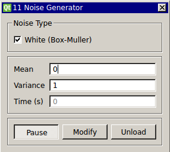

Requirements: Generator class (included), GSL library
Limitations: none noted

This module continuously generates Gaussian white noise computed using the Box-Muller method. This module is already included in RTXI v1.3+. You may edit this source code (eg. adding additional noise types). Compiling and installing this module will then overwrite the bundled version of the noise generator..